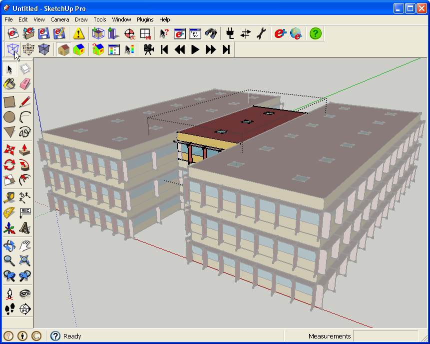
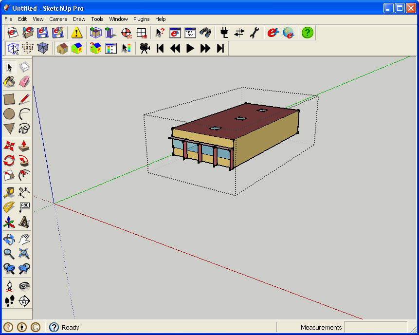
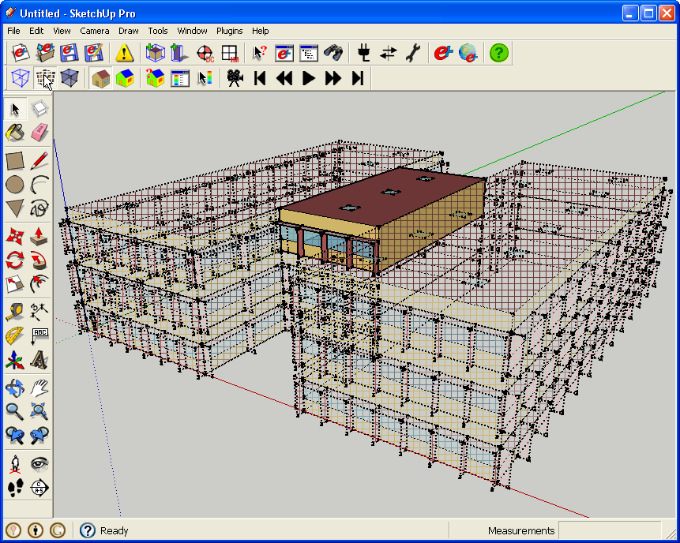
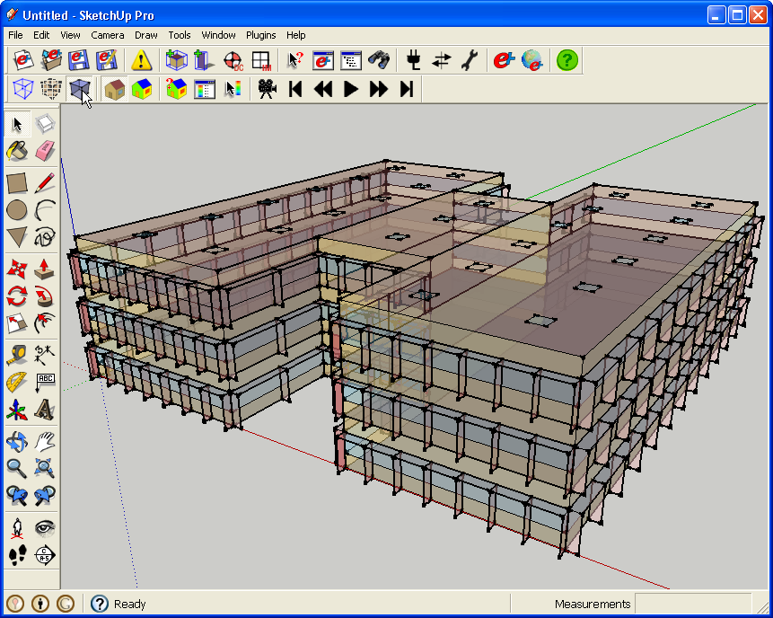
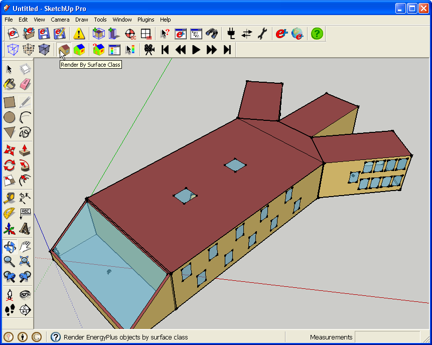
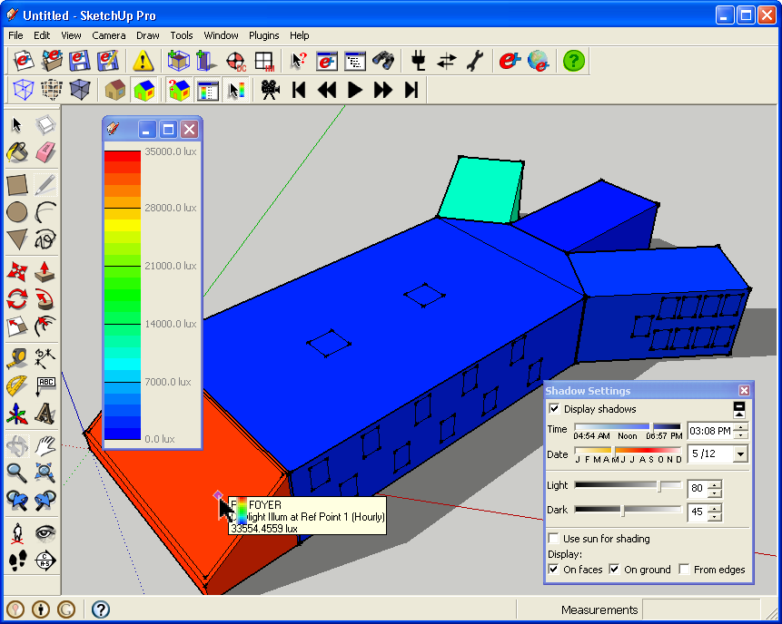
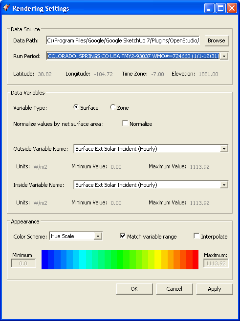
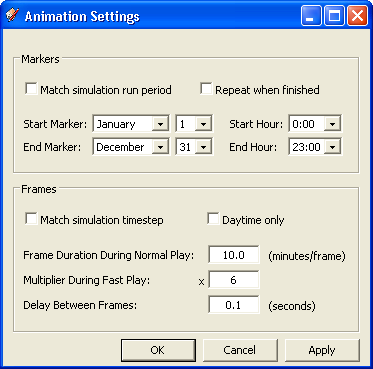

Rendering Options
 Hide Rest of Model(Native SketchUp Feature) Hide Rest of Model(Native SketchUp Feature)
 View Hidden Geometry(Native SketchUp Feature) View Hidden Geometry(Native SketchUp Feature)
 View Model in X-ray Mode(Native SketchUp Feature) View Model in X-ray Mode(Native SketchUp Feature)
 Render by Surface Class Render by Surface Class
Render by Data
Render Settings
 Color Scale Color Scale
 Simulation Results Data Tool Simulation Results Data Tool
Animation Settings
 Animation Controls Animation Controls
Hide Rest of Model
(Native SketchUp Feature)
On the first image "Hide Rest of Model" is not active, so when you edit a group or component the rest of the model, while grayed out, is still visible. The following image has "Hide Rest of Model" active. As a result when you are editing a group or component that is all use see of the model.

(Credit: David Goldwasser / NREL)

(Credit: David Goldwasser / NREL)
Back to Top
View Hidden Geometry
(Native SketchUp Feature)
When "View Hidden Geometry" is not active you would only see the middle zone on the third floor. But when I activate "View Hidden Geometry" I can see a semi-transparent view of the rest of the model. This is good to get your bearings of you are lost in the mode. This technique only shows objects that are hidden because of the "hide" attribute. If a layer that contains an entity has been turned off, then it will still be off in this viewing mode.

(Credit: David Goldwasser / NREL)
Back to Top
View Model in X-ray Mode
(Native SketchUp Feature)
X-ray mode gives you a way to quickly look inside your model without having to hide anything or create section cuts.

(Credit: David Goldwasser / NREL)
Back to Top
Render by Surface Class
This renders your model based on surface class. This is your typical working rendering style. Walls, roofs, windows, doors, and floors, and shading surfaces each have their own unique self assigned color.

(Credit: David Goldwasser / NREL)
Back to Top
Render by Data
Once the ESO file has been loaded, run period selected, and data variable selected the user may view the model colored by the data value using the Render by Data command. Surfaces or zones are colored by the variable value at a given instant in time. To change the time at which variables are displayed use the SketchUp Shadow Settings control (Window->Shadows). If the time is outside of the current run period then no values will be displayed. The user may display a color bar to reference the absolute values of the variable or use the data value cursor.

(Credit: David Goldwasser / NREL)
Back to Top
Render Settings
The Rendering Settings dialog allows users to select the EnergyPlus Standard Output (ESO) file corresponding to their current idf model. Once the ESO is loaded the user can select from available run periods (such as design days or annual simulations) and then from available report or meter variables. Scan the "*.mdd", "*.mtd", and "*.rdd" files to see which meters and report variables are available for your model. Currently, only surface or zone level meters and report variables are supported. Note that the ESO file can become quite large for models with many report variables, parsing this file may be somewhat slow and cause the UI to lock up. If possible, limit the amount of meter and report variable output requested, look at the results of design days only, or shorten the simulation run period to minimize the size of the ESO. There is also an option in the user preferences that allows the user to cache ESO files once they are read into a format that can be parsed more quickly. Note that this option will generate a "*.eso.cache" file in the same directory as the selected ESO file. The cache file may be deleted at any time and will be refreshed when the file timestamp on the ESO file is newer than the cache file.

(Credit: David Goldwasser / NREL)
Back to Top
Color Scale
The color scale is a window you can open that shows you the current data value associated with a rendered color. This will change as you adjust the min and max value and data type. You can see the color scale on the screenshot under "Render by Data" above.
Back to Top
Simulation Results Data Tool
The Results Data Tool functions much like the normal Information Data tool in OpenStudio, however in this case it displays the data associated with the surface it is over. This data is based on your current rendering settings. You can also see the Results Data Tool in use on the screenshot under "Render by Data" above.
Back to Top
Animation Settings
Once the ESO file is loaded into memory the user may watch how variables change with time throughout their model by using the Animation command. The time period to run may be configured and the user may configure the animation to loop continuously. No direct animation export is provided. However, a screen capture tool may be used to record a video for later use.

(Credit: David Goldwasser / NREL)
Back to Top
Animation Controls
Animation tools give you controls to play and pause, rewind and fast forward the animation. It uses the makers and frame settings you set in Animation Settings window above.
Back to Top
|